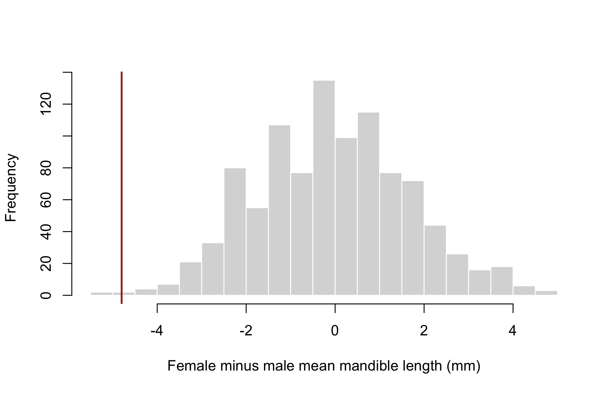

install.packages("permute", repos = c(
"https://gavinsimpson.r-universe.dev",
"https://cloud.r-project.org"
))Ordered set partitions and formulas in permute
Two additions to the restricted permutation toolbox
R
The development version of permute adds random assignments to groups of fixed size and a formula interface for specifying plots and blocks.
I’ve been giving permute a bit of attention recently. Two additions should make it easier to set up permutation tests: an option for ordered set partitions, and formulas for specifying plots and blocks. That’s a rather grand name for the first addition, so let’s start with what it does.
These changes are in the development version. To follow along, install it from my R-universe:
Same groups, fewer permutations
The jackal data that come with permute contain mandible lengths, in millimetres, for male and female golden jackals. They’re also used in the package vignette. Let’s ask whether mean mandible length differs between the sexes.
library("permute")
data(jackal, package = "permute")
table(jackal$Sex)
Male Female
10 10 We could shuffle all the observation indices and use them to rearrange the sex labels. With the default Within(type = "free") design, the number of possible index permutations is:
numPerms(nrow(jackal), control = how(within = Within(type = "free")))[1] 2.432902e+18But swapping a pair of males, or a pair of females, leaves the group labels unchanged. If our statistic is a difference of means, we haven’t created a different result by doing that.
What we need are the distinct ways of assigning the observations to two labelled groups, keeping the group sizes fixed. That’s the ordered set partition. Here, ordered means the groups are distinguishable — male and female have different roles — rather than that observations have to be sorted inside each group.
The new option is type = "partition" which belongs in Plots(). I’ll use the new formula interface here too; ~ Sex says to get the grouping variable from data, to which we pass jackal:
ctrl <- how(
plots = Plots(strata = ~ Sex, type = "partition"),
data = jackal
)
numPerms(nrow(jackal), control = ctrl)[1] 184756That’s quite a reduction from all the possible permutations of the observation indices! In general, if the group sizes are \(n_1, \ldots, n_K\), the number of distinct assignments is
\[ \frac{n!}{\prod_{k=1}^{K} n_k!}. \]
The group sizes come from the data; they don’t have to be equal.
We still get observation indices back from permute, so the usual indexing workflow works:
set.seed(42)
p <- shuffle(nrow(jackal), control = ctrl)
table(jackal$Sex[p])
Male Female
10 10 The labels have been shuffled, but their counts haven’t changed. Within the returned index vector, observations that originally had the same label retain their relative order. This gives us one representative for each distinct arrangement of the labels, instead of all the index permutations that would produce it.
There’s an important difference from Plots(type = "free"): that option moves whole plots as intact units. The partition option rearranges group membership. how() also selects Within(type = "none") automatically for a partition design. Asking to shuffle within these groups as well would put back the redundant orderings we’re trying to leave out, so other within-plot types aren’t allowed.
A permutation test with lm()
permute isn’t just for use with the vegan package — it was designed to be agnostic to the underlying model or test statistic. As an illustration, let’s fit a linear model to the jackal data:
fit <- lm(Length ~ Sex, data = jackal)
coef(fit)(Intercept) SexFemale
113.4 -4.8 The intercept is the mean for males, the reference level. The second coefficient is the female mean minus the male mean: females have mandibles that are, on average, 4.8 mm shorter in these data.
For a permutation test, we’ll keep the lengths where they are and shuffle the sex labels. We then refit the model for each assignment and save that same coefficient. Under the null hypothesis, we’re treating the labels as exchangeable among observations; this needs to be a reasonable assumption for the data we’re analysing.
set.seed(42)
perms <- shuffleSet(nrow(jackal), nset = 999, control = ctrl)
observed <- unname(coef(fit)[2])
null <- apply(perms, 1, function(i) {
permuted <- jackal
permuted$Sex <- jackal$Sex[i]
unname(coef(lm(Length ~ Sex, data = permuted))[2])
})shuffleSet() gives us a matrix with one assignment per row. We’re sampling a manageable set here, rather than fitting a model for every possible assignment.
Here’s what those coefficients look like, with the observed difference marked in red:
hist(null, breaks = "FD", main = "",
xlab = "Female minus male mean mandible length (mm)",
col = "grey85", border = "white")
abline(v = observed, col = "firebrick", lwd = 2)
For a two-sided test, we count differences at least as large as the observed one in absolute value:
tol <- sqrt(.Machine$double.eps)
p_value <- (1 + sum(abs(null) >= abs(observed) - tol)) /
(nrow(perms) + 1)
c(difference_mm = observed, p_value = p_value)difference_mm p_value
-4.800 0.005 The small tolerance includes ties that might otherwise be missed because of floating-point arithmetic in the model fits. Adding one to the numerator and denominator includes the observed result in this Monte Carlo test. The p-value is an estimate based on the sampled assignments, so it will vary with the random seed and the number requested.
If you don’t need to build a design explicitly, shufflePartition(jackal$Sex) and shufflePartitionSet(jackal$Sex, nset = 999) are handy shortcuts. There’s also allPartitions() for complete enumeration when the assignment space is small enough. As with allPerms(), it leaves out the observed assignment by default; use control = how(observed = TRUE) to include it.
Less typing with formulas
The formula interface works for both plot strata and blocks. To show the two together, let’s use the dune meadow data from vegan. dune contains the species data and dune.env contains the matching environmental variables.
Suppose we want to look at the association between vegetation and soil A1 horizon thickness, allowing comparisons only among sites with the same management and land use. We can express that restriction directly:
library("vegan")
data(dune, package = "vegan")
data(dune.env, package = "vegan")
formula_ctrl <- how(
plots = Plots(strata = ~ Management / Use),
blocks = ~ Management,
data = dune.env
)~ Management / Use creates a grouping factor for the observed combinations of management and land use. Plots() defaults to type = "none", while Within() defaults to "free", so sites are shuffled within those combinations. The blocks say that sites must also stay within their management category. The plot restriction already implies that here, but writing out both makes the hierarchy clear.
These restrictions assume sites are exchangeable within each management–use combination; grouping them this way doesn’t account for any remaining spatial dependence.
We can check where an actual shuffle sends the observations:
set.seed(42)
i <- shuffle(nrow(dune.env), control = formula_ctrl)
all(getBlocks(formula_ctrl)[i] == getBlocks(formula_ctrl))[1] TRUEall(getStrata(formula_ctrl)[i] == getStrata(formula_ctrl))[1] TRUEBoth the blocks and plot groups are respected. We can use the design directly in a vegan analysis. Here I partial out the management–use groups in an RDA, then test the additional association with A1 horizon thickness:
env <- dune.env
env$group <- getStrata(formula_ctrl)
ord <- rda(dune ~ A1 + Condition(group), data = env)
set.seed(42)
anova(ord, permutations = formula_ctrl)Permutation test for rda under reduced model
Blocks: Management
Plots: Management/Use, plot permutation: none
Permutation: free
Number of permutations: 199
Model: rda(formula = dune ~ A1 + Condition(group), data = env)
Df Variance F Pr(>F)
Model 1 4.3492 1.3265 0.225
Residual 8 26.2298 There’s little evidence of an additional association in this particular analysis. Some of the groups contain only one site, so those sites can’t move at all under this design. Restrictions matter, both for what question we’re asking and for how much information is available to answer it.
A couple of details are worth keeping in mind when writing these formulas. They describe grouping factors, not model terms: ~ Management + Use, ~ Management:Use, and ~ Management / Use all produce groups from the combinations of those variables. The slash doesn’t create an extra level in permute’s hierarchy.
Also, when Plots() is inside how(), supply data to how(), as above. If you’re constructing Plots() on its own, it can take its own data argument:
plot_groups <- Plots(strata = ~ Management / Use, data = dune.env)The existing factor interface still works, so there’s no need to rewrite old code. But I find the formulas easier to read, especially when grouping variables need to be combined. You can find the details in the design documentation, and I’d welcome feedback on either addition through the issue tracker.
There are also new helpers for working with the resulting permutations: permutations() returns shuffled values directly, while permutator() lets you step through a set of permutations. I’ll show those in a follow-up post.
Social